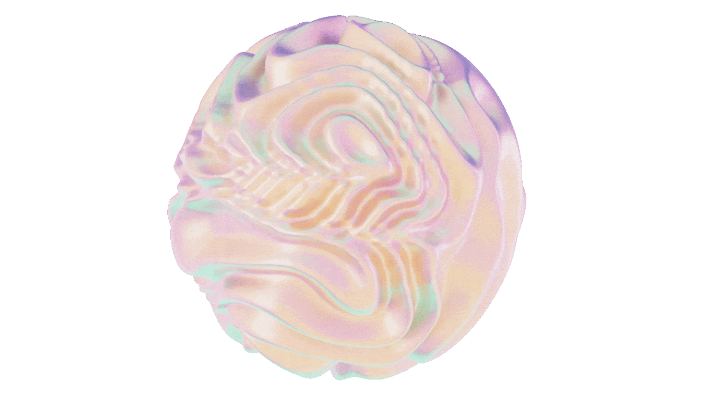

Branding
Sport Runclub Branding
Branding und digitale Plattform für einen Runclub mit Fokus auf Wiedererkennung, Community und Vertrauen.
Projekt ansehen →Ausgewählte Arbeiten aus UX/UI, Webdesign und Branding.

Branding und digitale Plattform für einen Runclub mit Fokus auf Wiedererkennung, Community und Vertrauen.
Projekt ansehen →Konzeption und Gestaltung einer modernen E-Commerce Plattform für nachhaltige Produkte.
Projekt ansehen →Konzeption und Gestaltung einer modernen E-Commerce Platform für nachhaltige Produkte.
Projekt ansehen →Digitale Produktentwicklung für eine App, die Berggipfel automatisch erkennt, exakt beschriftet und weltweit offline funktioniert.
Projekt ansehen →